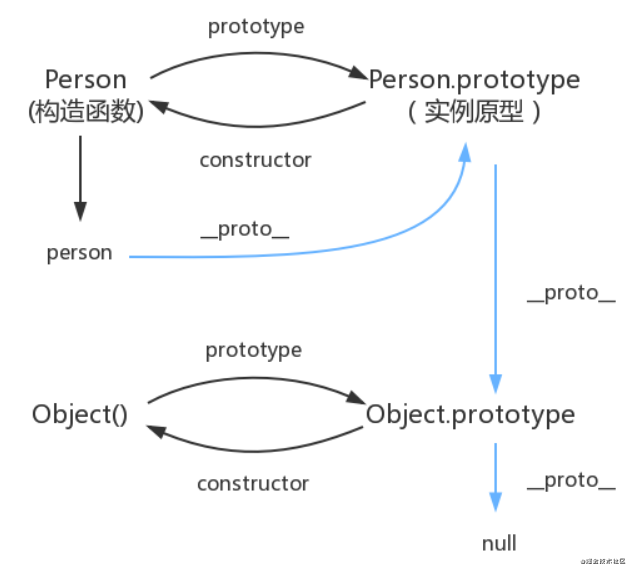

一、原型链
🎯 每个实例都有私有的_proto_属性指向它的原型对象。
而每个原型对象也有自己的_proto_属性指向更高层的原型对象，直到指向的原型对象为null。
这样一个过程所构成的链路就被称为原型链。（原型与原型层层相连接的过程就叫做原型链）
p 是实例对象，Person是 p 的构造函数
p 的 proto 属性指向 构造函数 Person 的原型。
每个原型都有一个 constructor 属性，指向该关联的构造函数。
构造函数都有一个 prototype 属性指向实例原型。（所有的构造函数都是Function的实例）

除了 Object 的 prototype 的原型是 null 外，所有的对象 和 原型 都有自己的原型，对象的原型 指向 原型对象。
作用：可以共享方法
在构造函数中定义的属性与方法可以被实例继承，但是不能被共享。而原型XXX.prototype.say()定义的方法可以被实例共享。
（这个时候原型对象还是有constructor构造的this指向constructor本身，如果是XXX.prototype = {}给原型重新赋值，就会丢失构造，需要手动定义构造并将this指向构造函数本身。一般是不允许直接改变原型指向的）
二、构造函数
构造函数的特点
● 构造函数的首字母大写
● 构造函数的this指向将要创建的新对象
● 构造函数通过new 来创建新对象
● 构造函数可以通过原型对象添加方法
● class类所有的方法都定义在类的prototype属性上
● class类创建的实例，里面也有_proto_指向类的prototype原型对象
● es6语法糖（语法糖只是为了增强代码可读性）
new的实现
- 创建一个新对象，用作返回的实例
- 获取构造函数，并且将新对象的_proto_属性指向构造的原型对象
- 执行构造函数，将构造中的属性值赋值给新对象，this指向新对象
- 返回新对象
// new的实现
function myNew() {
let obj = {};
let Constructor = Array.prototype.shift.call(arguments);
obj._proto_ = Constructor.prototype;
var result = Constructor.apply(obj, arguments);
return typeof result === 'object' ? result : obj;
}三、继承
继承的实现方式
- 原型链继承：通过修改子类的原型为父类的实例
a. 实现方式：Child.prototype = new Parent();或者Child.prototype = Child.prototype;
b. 优点：易于实现，所创建的实例是子类的实例也是父类的实例
c. 缺点：来自原型对象所有属性会被实例共享，其中一个实例修改会导致其他实例的这个属性也被修改。无法多继承，无法向父类构造传参。 - 构造函数继承：通过new
a. 优点：解决了原型链继承方法共享的问题，可以调用父类的构造给构造传参，实现了多继承
b. 缺点：所有的方法都定义在构造函数中，每次都需要重新创建，无法函数复用，影响性能 - 组合继承：结合原型链继承跟构造继承
a. 优点：多继承
b. 缺点：父构造函数被调用了两次 - 拷贝继承
- 实例继承
- 寄生组合继承
四、闭包
能够访问另一函数作用于中变量的函数
优点：避免全局变量的污染
缺点：闭包的变量不会被回收，占用内存
五、this指向
1.this指向
● 全局环境作用域：this指向window
● 自执行函数（匿名函数）：this指向window
● 函数环境作用域：this指向当前函数
● 对象中的方法函数调用：this指向该方法所属对象
● 通过事件绑定的方法：this指向绑定事件的对象
● 构造函数：this指向新对象
● 箭头函数：this指向父级对象，this是在定义函数时绑定的，不是执行过程中绑定的，且call()、apply()、bind()对于箭头函数来说只是参数，对this的指向没有影响。
总结：
直接调用，指向window
函数里调用，指向window
对象方法里调用，指向对象
构造里调用，指向new创建的新对象
2.call、apply、bind改变this指向
// 示例
var person = {
name: 'zs',
age: 18,
}
function test(x, y) {
console.log(x, y);
console.log(this.name);
}
test(1, 2); // 这里直接调用，this指向window。打印结果为：1，2 undefined
// 更改this指向
// call()
test.call(person, 4, 5); // this指向person对象，直接传参，调用函数，打印结果：4，5 zs
// apply()
test.apply(person, [4, 5]); // this指向person对象，数组传递参数，调用函数，打印结果：4，5 zs
// bind()
test.bind(person, 4, 5); // this指向person对象，函数不调用，没有打印信息。
test.bind(person, 4, 5)(); // this指向person对象，调用函数，打印结果：4，5 zs总结：
相同点：
● 都可以改变this的指向
不同点：
● call 与 apply会调用函数，并且改变函数内this的指向，只是传参不同。call是单个传参，apply可以传数组。
● bind 不会调用函数，参数也是一个一个传。
使用场景：
● call 常用来做继承
● apply 跟数组有关系，比如数组最大值最小值
● bind 改变this指向，不调用函数。比如：改变定时器内部的this指向
3.作用域
词法作用域：在定义时的作用域中运行而不是在执行它们的作用域中运行
局部作用域：在函数内声明的变量，可以在整个函数使用范围内使用以及复用（函数作用域）
块级作用域：在变量声明的代码之外是不可见的，比如{}在if{}、 for{}内
变量作用域
全局变量：在全局作用域的变量，只有在浏览器关闭的时候才会销毁，比较占内存
局部变量：函数内部使用，函数执行完毕就销毁（闭包内的变量除外）
六、箭头函数
1.箭头函数特点
● 箭头函数不可作为构造，不能使用 new
● 箭头函数没有自己的 this
● 箭头函数没有 arguments
● 箭头函数没有原型对象
暂时就这么多啦！等我想到了再来分享给大家！